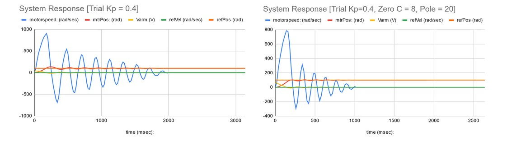

Classical Controls: Ball on Beam
Introduction
Prior to this project, I was familiar with the requirements of building a physical pendulum/lever system, as I had built several trebuchets in high school. Unlike a trebuchet hoever, the fine tuning of the ball and beam system is the controls loop that wraps arduino system data, and the finetuning is done through matlab and analysis of data via excel and matlab analysis.
Project Scope
The purpose of this project is to use a cascaded control loop to optimize a physical balancing beam and ball system. Utilizing several controls engineering techniques in an iterative approach to improve the system, small improvements were met with analysis of resulting issues, and optimization. The control techniques progressively built up to a final system including optimizing plant parameters, Pole-Zero compensation, Lead/Lag compensation, and a PID control loop.
Artifact1
dont know
Pole Zero Cancellation
insert text here
insert text here
insert text here

insert text here
insert text here

insert text here